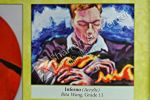

“多动症儿童”的常春藤之路－莎伦学生Rita被耶鲁提前录取
莎伦画院学生Rita被耶鲁大学提前录取。她将于2015年9月入读耶鲁大学，申请大学时递交了重量级绘画作品集的她，希望未来成为一名律师。
当她回来莎伦画院看望老师时，对于13年来在莎伦画院从不间断的学习成果表示十分自豪与欣慰。她的妈妈笑言道：女儿从小好动，多动症特征，她占了一半多。
刘老师还清楚地记得13年前，Rita的妈妈怯生生地进门来，一脸惶恐的表情，探问可否收留一个5岁的小女孩学画？从此每周那堂课就成为Rita＂表演＂的场地。她的热情开朗为她赢得了很多友谊，也使自己的绘画学习进步比別人缓慢些。每堂课老师的重点是纠正她的纪律，但并没有降低对未来教学目标的要求。
Rita的作品多次被选刊入美国的画册
Rita的作品多次被选刊入美国的画册
Rita在半玩半学中长大。难得的是父母没有因此而心急，从未怪罪於老师，从未想转去其他画室试试看。Rita的姥姥是大学退休教授，她说全家人很认同莎伦画院的教学理念，莎伦画院每出一篇教育文章，全家人必细细阅读。坚信通过一项课后才艺的长期训练，能够改变及成就一个孩子。Rita的父亲汪博士是美东著名中文学校的创办人，对以成长教育中的坎坷深能包容。
经过长期的磨练和积累，上了初中，慢悠悠的Rita尝试比赛了。她先后羸得联合国环境绘画大奖和全美国的国庆绘画比赛第一名。上了高中，她慢慢变得懂事了，课余把主要时间精力都投入绘画学习和中学生口才与领导能力训练上。好动的她，却时常有创作冲动，竟然能够自觉地挪出点滴时间，常常自己在家创作大幅作品，这是长期的知识积累、技巧结合、与思想沉淀的结果。每次给莎伦画院的老师看她的家庭作品时，老师总是从她随性的画作中，找出优点给予肯定，再加於提升的指导，因此，她的作品自然、干练、自信、潇洒、展现出人意外的大胆。高中的大幅度进步，为她赢得全美scholastic绘画金匙奖及其他若干大奖。各种荣誉迎面而来，Rita从中体验到成就感，让她从被动变为积极！
Rita的作品个性鲜明，向耶鲁大学显明了她的优点长处与思想逻辑。在2014年莎伦年度慈善画展中，Rita也主动承担了部分工作⋯
弟弟John学画画的前几年，每次进教室时，总半闭着眼睛装睡⋯并非每个孩子都是天生的乖乖牌。看起来顽皮的孩子只要经过合宜的引导，最后表现出来的可能是异于常人的出色。所以，无论John如何变法子，父母坚持让他把绘画课学下去，一如当年对Rita的要求一样。